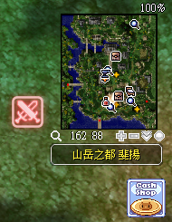
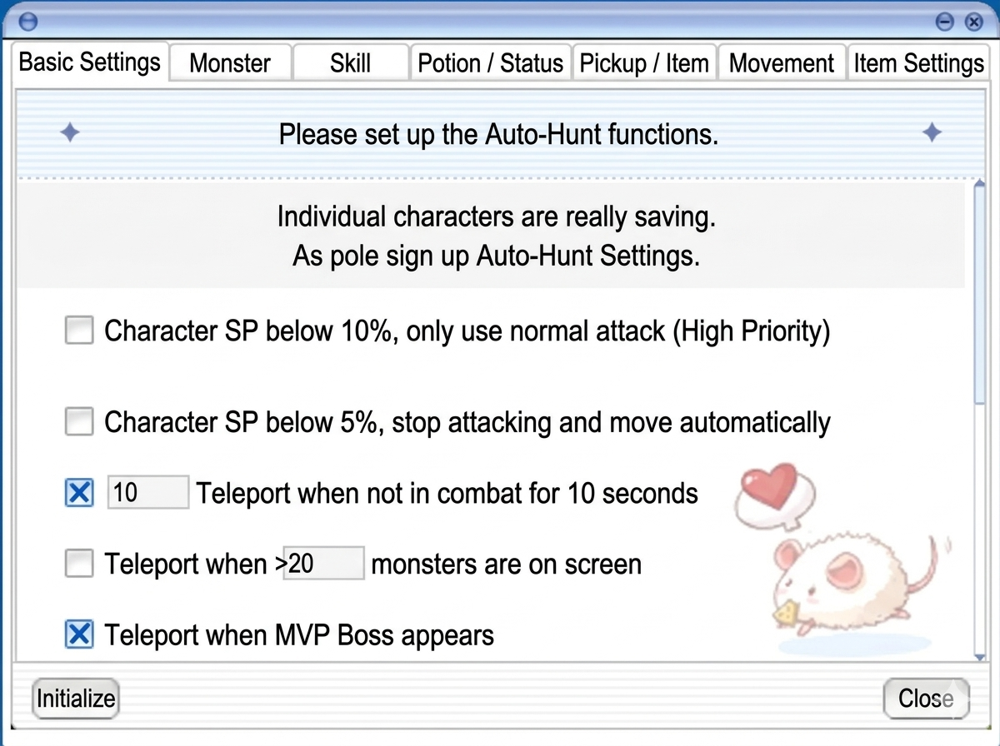
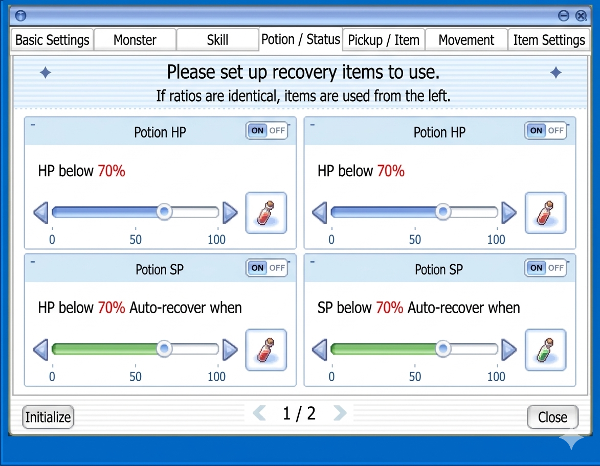
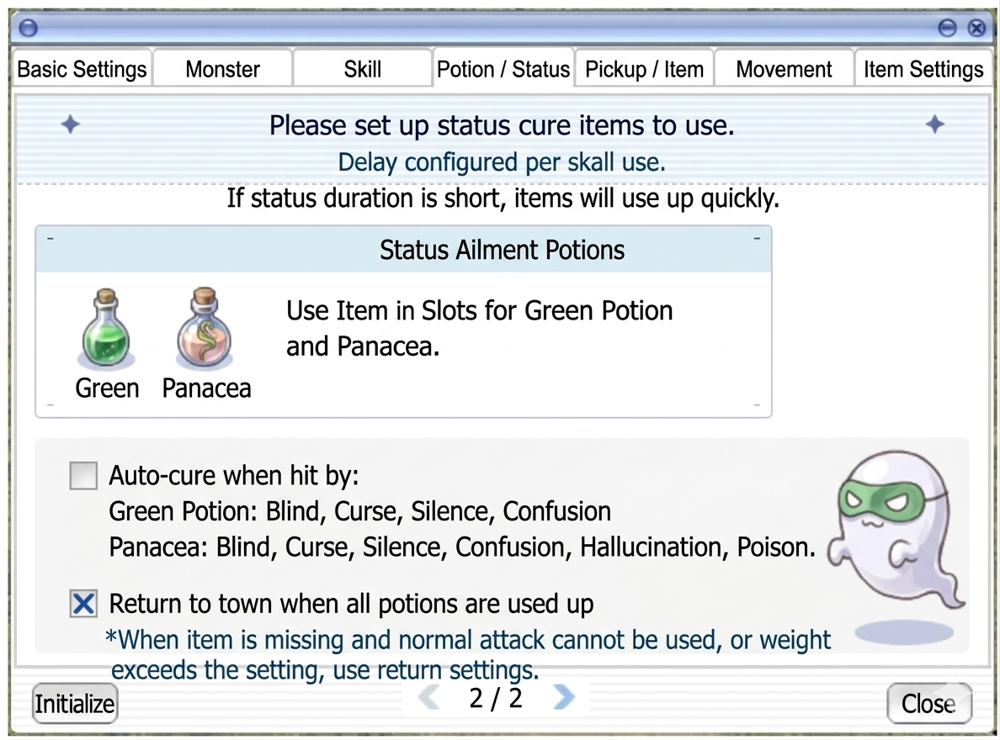
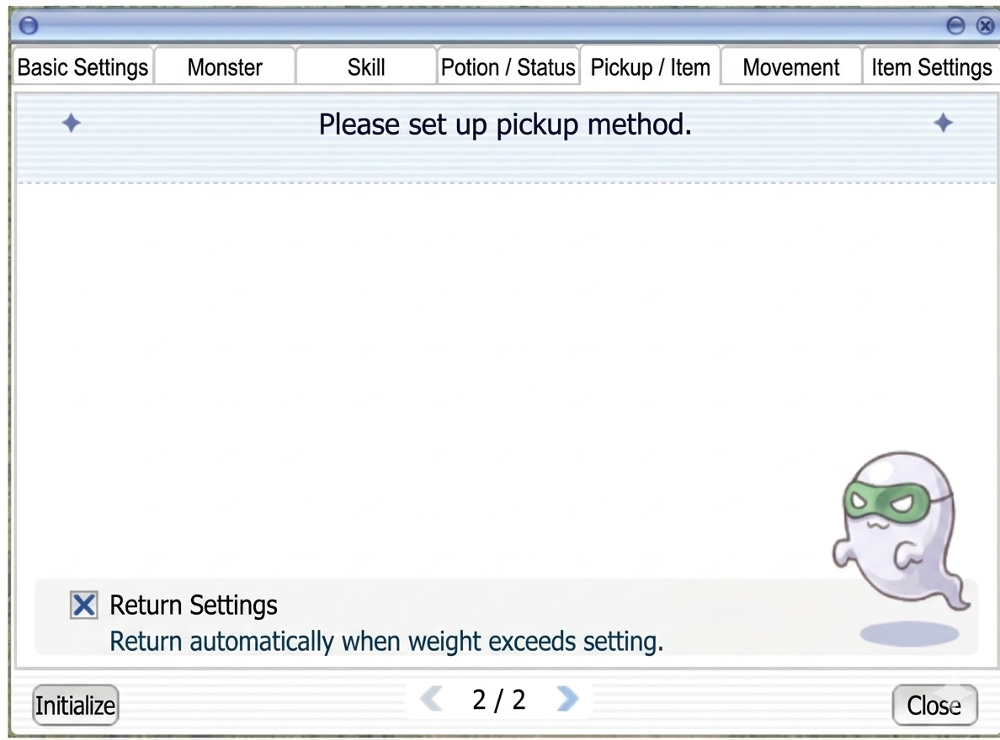
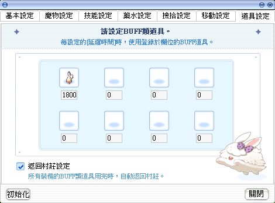

Auto-Hunt (內掛) & Auto-Pot
Wie das TW-exklusive Auto-Combat-System funktioniert — und warum es einen richtigen Auto-Pot-Threshold (noch) nicht gibt.
🤖 Auto-Hunt (內掛) & Auto-Pot-Situation
Das Auto-Hunt-System (內掛) ist das zentrale QoL-Feature der TW-Version und wird aller Voraussicht nach auch auf Global so übernommen. Dieser Abschnitt dokumentiert den aktuellen Stand (Stand: April 2026, nach dem März-24-Patch) und räumt vor allem mit einem Missverständnis auf: einen klassischen „Auto-Pot"-Threshold gibt es (noch) nicht.
📖 Offizielle GNJOY-Dokumentation
Die offizielle Dokumentation von Gravity TW beschreibt das Auto-Battle-System (內掛) als Komfort-Erweiterung für ein entspannteres Spielerlebnis. Die UI ist in sieben Konfigurations-Tabs unterteilt:
🎯 Schnellzugriff-Button
Der Auto-Battle-Toggle hat ein Kreuz-aus-zwei-Schwertern-Icon und ist standardmäßig neben der Minimap oben rechts platziert. Er lässt sich auf jede Position auf dem Bildschirm ziehen (inkl. neben das MENU-Poring).

📋 Minikarte — Deutsch aufklappen
Die Minikarte zeigt den aktuellen Standort in der Stadt Payon mit Koordinaten und verschiedenen Points of Interest an.
- Ort: Payon
- Koordinaten: 162 88
- Zoom-Status: 100%
Die Minikarte zeigt Symbole für NPC-Dienstleistungen wie Schmied, Gasthaus und Shops an.
⚙️ Konfiguration öffnen
Klick auf das MENU (pinkes Poring) unten rechts → 自動戰鬥 (Auto-Battle) öffnet das Settings-Fenster mit 7 Tabs.

📋 Hauptmenü — Deutsch aufklappen
Dies ist das Hauptmenü des Spiels, das verschiedene Systemoptionen und Fenster für den Spieler anzeigt.
- Character Status
- Equipment
- Inventory
- Skills
- Party
- Guild
- Quest Log
- World Map
- Navigation
- Settings
- Bank
- Replay
- Achievements
- Help
- Cash Shop
- Hotkey Guide
- Attendance
- Brokerage
- Reputation
- Auto Battle
Der rote Pfeil markiert den Button für 'Auto Battle'. Der 'MENU' Button unten rechts schließt oder öffnet dieses Fenster.
📑 Die 7 Konfigurations-Tabs
1. 基本設定 — Grund-Einstellungen
Grundlogik für Ausdauer während des Auto-Battles. Zentrale Schalter wie Return-to-Town, Death-Recovery.
2. 魔物設定 — Monster-Targeting
Auf Maps mit mehreren Mob-Typen kannst du gezielt bestimmte Monster markieren (Hunting-Ziele vs. Ignorieren).
3. 技能設定 — Skills
4 Angriffs-Slots + 4 Support-Slots mit konfigurierbarer Skill-Verzögerung.
Nach März-2026-Patch: 8+8 Slots
4. 藥水設定 — Potions
Tab 1: 2 HP-Slots + 2 SP-Slots. Tab 2: Grüne Potions, Universal-Medizin.
5. 撿拾設定 — Pickup
Tab 1: Gewichts-Limits, Item-Typ-Filter, Min-Anzahl-Zufalls-Optionen für Target-Items.
Tab 2: Gewichts-bezogene Nebenfunktionen.
6. 移動設定 — Movement
Fly-Wing / Teleport-Settings. Bei ausreichend Zeny massiv effizienzsteigernd.
7. 道具設定 — Items
BUFF-Items einrichten mit zeitbasiertem Re-Cast (Blessing, Increase AGI, Food-Buffs, etc.).
🖼️ UI-Referenz-Screenshots

📋 Auto-Hunt Einstellungen — Deutsch aufklappen
Das Fenster zeigt die grundlegenden Konfigurationseinstellungen für die Auto-Hunt-Funktion im Spiel.
- Character SP below 10%, only use normal attack (High Priority)
- Character SP below 5%, stop attacking and move automatically
- 10 Teleport when not in combat for 10 seconds
- Teleport when >20 monsters are on screen
- Teleport when MVP Boss appears
Die Tabs oben erlauben den Wechsel zwischen verschiedenen Kategorien wie Monster, Skill, Potion/Status, Pickup/Item, Movement und Item Settings.

📋 Monster-Auswahl-Menü — Deutsch aufklappen
Ein Konfigurationsfenster für die Monster-Auswahl innerhalb der Spiel-Einstellungen, um Ziele für Aktionen festzulegen.
- Target Poring (ausgewählt)
- Target Lunatic
- Target Lunatic
- Target Fabre
- Target Chonchon
- Target Mastering
Die Registerkarten am oberen Rand erlauben den Wechsel zwischen verschiedenen Spieleinstellungen wie 'Basic Settings', 'Skill', 'Potion / Status', 'Pickup / Item', 'Movement' und 'Item Settings'. Am unteren Rand befinden sich Buttons zum 'Initialisieren' (Zurücksetzen) und 'Schließen' des Fensters.

📋 Skill-Einstellungen für das automatische Kampfsystem — Deutsch aufklappen
Das Fenster ermöglicht die Konfiguration von Angriffs- und Unterstützungsfertigkeiten sowie deren Verzögerung für das automatische Kampfsystem.
- Basic Settings
- Monster
- Skill
- Potion / Status
- Pickup / Item
- Movement
- Item Settings
- Please set up Attack / Support Skills.
- Delay configured per skill use.
- Attack Skill Settings
- Support Skill Settings
- Use Normal Attack
- When skills cannot be used, use normal attacks.
- Initialize
- Priority is left-to-right.
- Close
Die Benutzeroberfläche dient zur Priorisierung von Skills, wobei die linke Seite eine höhere Priorität hat. Die Zeitverzögerung kann für jeden Skill einzeln in Sekunden festgelegt werden.

📋 Trank- / Status-Einstellungen — Deutsch aufklappen
Dies ist das Einstellungsmenü für die automatische Verwendung von Heiltränken basierend auf HP- oder SP-Schwellenwerten.
- Tab: Basic Settings
- Tab: Monster
- Tab: Skill
- Tab: Potion / Status
- Tab: Pickup / Item
- Tab: Movement
- Tab: Item Settings
- Anweisung: Please set up recovery items to use. If ratios are identical, items are used from the left.
- HP-Regenerations-Einstellungen (2 Slots)
- SP-Regenerations-Einstellungen (2 Slots)
- Schwellenwert-Anzeige: HP below 70%
- Schwellenwert-Anzeige: SP below 70%
- Schaltflächen: Initialize, Close
Die Benutzeroberfläche ermöglicht die Konfiguration von zwei HP-Trank-Slots und zwei SP-Trank-Slots mit jeweils prozentualen Schwellenwerten.

📋 Einstellungen für Statusveränderungs-Heilmittel — Deutsch aufklappen
Das Menü ermöglicht die Konfiguration von Heiltränken für Statusveränderungen sowie Einstellungen für die automatische Rückkehr in die Stadt.
- Bitte konfigurieren Sie die zu verwendenden Heilmittel für Statusveränderungen.
- Verzögerung pro Tranknutzung konfiguriert.
- Wenn die Dauer des Status kurz ist, werden die Gegenstände schnell aufgebraucht.
- Status-Heiltränke: Verwenden Sie Gegenstände in den Plätzen für Green Potion und Panacea.
- Automatische Heilung bei Treffern durch: Green Potion (Blind, Curse, Silence, Confusion), Panacea (Blind, Curse, Silence, Confusion, Hallucination, Poison)
- Rückkehr in die Stadt, wenn alle Tränke aufgebraucht sind
- Wenn ein Gegenstand fehlt und keine normalen Angriffe genutzt werden können oder das Gewicht das Limit überschreitet, werden die Rückkehr-Einstellungen verwendet.
Dieses Fenster ist Teil der Automatisierungs-Einstellungen im Ragnarok Zero Client.

📋 Einstellungsmenü für das automatische Aufsammeln — Deutsch aufklappen
Dies ist das Interface zur Konfiguration der automatischen Aufsammel-Optionen für den Charakter oder Begleiter, inklusive Gewichtsbeschränkungen und Filter.
- Basic Settings
- Monster
- Skill
- Potion / Status
- Pickup / Item
- Movement
- Item Settings
- Please set up pickup method.
- Pick up options when weight exceeds setting
- Weight Limit: Stop pick up when weight reaches 90%.
- Pick up Weapon with <0> or more options.
- Pick up Armor with <0> or more options.
- Use normal attack.
- Only pick up [Weapns / Armor] with [number] or more options.
- Consumables
- Cards
- Other Items
- Return Settings
Die UI zeigt Einstellungen für das automatische Looten von Gegenständen, wobei die Gewichtsgrenze auf 90% konfiguriert ist.

📋 Aufnahme-Einstellungen — Deutsch aufklappen
Das Fenster zeigt die Einstellungen für das automatische Aufsammeln von Gegenständen, inklusive einer Option für die Rückkehr bei Übergewicht.
- Basic Settings
- Monster
- Skill
- Potion / Status
- Pickup / Item
- Movement
- Item Settings
- Please set up pickup method.
- Return Settings
- Return automatically when weight exceeds setting.
- Initialize
- 2 / 2
- Close
Dies ist die zweite Seite des 'Pickup / Item'-Reiters im Spiel-Interface.

📋 Bewegungseinstellungen — Deutsch aufklappen
Das Menü ermöglicht die Konfiguration von Teleportations-Optionen und die automatische Rückkehr zum Speicherpunkt.
- Teleport Settings: Use Item (Fly Wing), Use Skill (Teleport)
- Return to Save Point: Use Item (Butterfly Wing), Use Skill (Warp Portal)
- Check to Conditions met in Save Pickup.
- Use 'Return' settings if out of consumables or weight is exceeded.
Dies ist ein Konfigurationsfenster für einen Bot oder ein Makro-Tool in Ragnarok Online.

📋 Einstellungen für Buff-Items — Deutsch aufklappen
Das Fenster ermöglicht die Konfiguration von Buff-Items, die nach einer bestimmten Zeit automatisch verwendet werden sollen, sowie eine Option zur Rückkehr in die Stadt, wenn die Items aufgebraucht sind.
- Grundlegende Einstellungen
- Monster-Einstellungen
- Fähigkeiten-Einstellungen
- Trank-Einstellungen
- Aufhebe-Einstellungen
- Bewegungs-Einstellungen
- Item-Einstellungen
Benutzeroberfläche des automatischen Buff-Systems. Der Benutzer kann bis zu 8 verschiedene Items und deren jeweilige Verzögerungszeit in Millisekunden konfigurieren. Die Option 'Rückkehr in die Stadt' sorgt dafür, dass der Charakter zum Speicherpunkt zurückkehrt, sobald die Buff-Items leer sind.
- Das Auto-Battle-System wird kontinuierlich weiterentwickelt — Screenshots zeigen einen Moment-Zustand, echte Features ändern sich mit Patches.
- Nicht alle Items / Skills können in das Auto-Battle-System eingebunden werden. Was erlaubt ist, entscheidet das Spiel.
- Zur Balance-Wahrung kann die Liste erlaubter Items/Skills ausgeweitet oder eingeschränkt werden. Patch-Notes im Auge behalten.
⚙️ Auto-Hunt Grundmechanik
Kapazität (nach März-2026-Patch)
- 8 Angriffs-Skill-Slots (vorher 4) — hier trägst du deine Damage-Skills ein
- 8 Support-Skill-Slots (vorher 4) — Buffs, Heals, Pot-Timings
- Auto-Cast + Auto-Shadow-Cast — werden unterstützt für Support-Skills
- Combo/Chain-Settings (自訂連招) — eigene Skill-Reihenfolgen
- Normal-Attack-Toggle — kann an- oder abgeschaltet werden (wichtig z.B. für Alchemisten mit Homunculus)
Was du konfigurieren kannst
- Skill-Delay zwischen Aktionen
- Pickup-Delay
- Drink-Delay (Wasserkonsum-Pause, nicht HP/SP-Threshold!)
- Auto-Hunt-Flow (Ablauf-Reihenfolge)
- Map-Freischaltung (manche Maps sind standardmäßig für Auto-Hunt gesperrt)
Was du NICHT konfigurieren kannst (C++-hardcoded)
- Erkennungs-Reichweite: nur ca. 7–8 Zellen um den Charakter. Monster weiter weg werden komplett ignoriert
- Erkennungs-Frequenz: fest limitiert
- Target-Priorität: greift immer das nächste Ziel an — keine Prioritätsliste, keine Ignore-Liste, keine Elemental-Priorisierung
💊 Auto-Pot-System
Konfiguration
- Eigene Slots für HP-Potions und SP-Potions
- UI zeigt die aktuellen Potion-Icons mit Restmenge im Inventar
- Threshold-basiert: Vermutlich %HP- und %SP-Slider (exakte UI-Elemente aus öffentlichen Quellen nicht 1:1 dokumentiert)
- Pot-Trigger läuft parallel zum Support-Skill-Engine (Buff-Refresh + Heal-on-Party-Member)
Unterstützte Items
- HP: Red / Orange / Yellow / White Potions, Condensed White, Royal Jelly (蜂王乳)
- SP: Blue Potion, Grape Juice, Mastela Fruit
- Yggdrasil Berry / Leaf als Emergency-Items → aus öffentlichen Quellen nicht bestätigt
🐛 Kritischer Bug — Return-to-Town
Bekannte Einschränkungen
- Config-Reset-Bug: Änderungen während einer Session können bei Disconnect verloren gehen. Erst nach Rückkehr zum Char-Select sind sie persistent.
- Pot-Count-UI-Bug: Anzahl-Anzeige kann leer wirken, obwohl Items noch im Inventar sind.
- Kein automatisches Restock: Pot-Verbrauch auffüllen = manuelles Town-Runnen und NPC-Kauf.
- Standard-Potion-Global-Cooldown (~1s) gilt — kein Umgehen.
- Multi-Threshold-Stacking (z.B. White Pot @ 50% + Royal Jelly @ 20%) aus Quellen nicht bestätigt — wahrscheinlich möglich, aber nicht verifiziert.
Weitere Sustain-Optionen parallel zum Auto-Pot
- Pots als Support-Skills timen — Du kannst Potions zusätzlich in die 8 Support-Skill-Slots mit festem Intervall legen (z.B. "Condensed White alle 5 Sek"). Zeit-basiert, nicht HP-basiert.
- Passive Regen-Gear: Eden Group Boots (+10–14% HP-Regen), Zero Beetle Card (SP-Regen-on-Kill), Spiritual Ring, Shadow-Priest-Shoes
- Klassen-spezifische SP-Sustain-Builds: Knight "Pierce Machine" (INT 40-60), Priest mit Magnificat Lv 5 (Party-SP-Regen x2)
🖼️ UI-Struktur (rekonstruiert aus Forum-Beschreibungen)
- Multi-Tab-Fenster mit mehreren Seiten
- Seite 1: Resurrection-Count-Checkbox, Death-Return-Toggle, Weight-/Supply-Cutoffs, Pot-Slots
- Attack-Skills-Tab: 8 Slots, pro Skill konfigurierbar: Skill-Level, Delay zwischen Casts, Max-Casts pro Target, per-Mob-Binding
- Support-Skills-Tab: 8 Slots, Auto-Cast + Auto-Shadow-Cast Toggles
- Per-Monster-Targeting-Tab: Skill → Mob-Name-Bindings
- Import/Export: Config als Datei teilbar mit anderen Spielern
Class-spezifische Tricks für HP/SP-Sustain
- Knight: „Pierce Machine"-Build mit INT 40–60 → regeneriert SP schnell genug um Pierce dauerhaft zu spammen. Zero Beetle Card (SP-Regen-on-Kill) ist der Gamechanger
- Priest: Magnificat Lv 5 als eigenen Support-Buff → verdoppelt SP-Regen, Heal als Auto-Cast
- Monk: Asura nicht auto-hunt-tauglich (manuelles Timing nötig); Combo-Logik ist fehlerhaft und ignoriert Spirit-Sphere-Count
- Alchemist: Cart-Attack-Skill-Slot auf 999 Sek setzen = effektiv deaktiviert, sodass nur Homunculus farmt
- Wizard: Bekannter Bug — nach Single-Skill-Trigger (z.B. Ganbantein) werden Items manchmal nicht aufgehoben
🎯 Target-Handling Detail
- Nearest-Target-Only: Bei mehreren Mobs in Reichweite wird immer der nächstgelegene angegriffen. Kein User-Override
- Off-Screen-Ignoranz: Homunculus erkennt Mobs außerhalb der Player-Reichweite (teilweise auch off-screen), Auto-Hunt aber nur 7–8 Zellen. Das führt dazu, dass Homunculus „Gassi geführt" wird — der Player läuft in Homunculus-Richtung, sieht aber selbst die Mobs nicht
- Nach-Kill-Pause: Häufige Player-Complaint — nach Kill steht der Char oft 1–2 Sekunden bevor nächstes Target aufgenommen wird. Wird als „inaktiv-wirkend" wahrgenommen
- Search-Walk: Wenn kein Target in Reichweite, bewegt sich der Char in Zufalls-Richtung (wie ein Gassi-Hund) — kein Pfad-Algorithmus
🛡️ PvP & Map-Restriktionen
- PvP-Maps: Auto-Hunt ist dort deaktiviert (April-2026-Patch) — zusätzlich wurden Fly Wing + Teleport in PvP-Maps geblockt
- Bestimmte Endgame-Maps: Standard für Auto-Hunt gesperrt (Unlock via NPC-Items möglich)
- Instanzen: Auto-Hunt funktioniert innerhalb von Memorial-Dungeons, aber Boss-Mechaniken (Reflect Shield, Shaman's Flowers etc.) werden ignoriert — oft resultiert in Wipes
💀 Death-Handling
- Bei Tod: Keine automatische Respawn-Aktion — der Char bleibt am Death-Screen bis Player manuell eingreift
- Kein automatisches Gear-Repair / Potion-Restock in Town
- Keine automatische EXP-Penalty-Recovery
🔄 Wie du trotzdem länger AFK-farmst
- Multi-Char-Setup: TW erlaubt 5 Accounts/ID. Einen Support-Priester im Party-Slot mit Magnificat und Blessing auf Timer → dein Farm-Char bleibt oben
- Pot-Preloading: Inventar voller Red Potions + Blue Potions + Orange Potions. Support-Slots mit Staffel-Timern (z.B. Red 3s, Orange 7s, Blue 5s). Bei rotierendem Trinken reicht oft 2–4 Stunden
- Gear-Priorität: HP-Regen-Items (Eden Group Boots: +10–14% HP-Regen, Shadow Merchant Armor-Varianten) sind entscheidend
- Farming-Spot-Auswahl: Maps wählen, wo Mobs nicht schneller Damage machen als dein Regen. Siehe Level-Routen und Fever-Felder
📊 March-2026-Patch — Was sich geändert hat
- Attack-Skill-Slot-Limit auf 8 erhöht (vorher 4)
- Support-Skill-Slot-Limit auf 8 erhöht (vorher 4)
- Support-Skill-Toggle-Logik optimiert
- Auto-Cast + Auto-Shadow-Cast im Support-Slot hinzugefügt
🏆 Tier-List: Welche Klassen sind am besten zum Auto-Hunt?
Ranking basiert auf: 1) Skill-/SP-Sustain ohne manuellen Eingriff, 2) Target-Acquisition im 7–8-Zellen-Radius, 3) Robustheit gegen die Auto-Hunt-Eigenheiten (Nach-Kill-Pause, Nearest-Only, fehlender Auto-Pot).
🥇 S-Tier (1. Job)
Archer — der "Version's Child"
Double Strafe = ein Skill, ein Ziel, kein Combo. Ranged → bricht aus Nahkampf-Radius aus, bevor Damage reinkommt. SP-Kosten niedrig genug dass ein Blue Potion alle 5s reicht. Nur Ausgabe: Arrows im Inventar.
Setup: DS Lv 10 in Slot 1, Owl's Eye passiv, Fire/Silver Arrows für Element-Coverage.
🥇 S-Tier (1. Job)
Mage — single-target Bolt
Cold/Fire/Lightning Bolt als Single-Target-Skill ist stabil auto-hunt-tauglich. Wichtig: pick ONE Bolt, nicht mehrere im Attack-Slot (Auto-Hunt macht sonst Element-Chaos).
Setup: Ein Bolt-Typ max, Fire Wall bei Bedarf im Support-Slot. INT-Gear für SP-Pool.
🥈 A-Tier (1. Job)
Swordsman — Bash spammer
Bash Lv 10 + Magnum Break als Clear-Support funktioniert. HP-Regen ausreichend für moderate Mobs. Problem: Nearest-Only ignoriert Aggro-Mechaniken, Crowd-Situationen führen zu Deaths.
Setup: Bash als Attack-Slot 1, Endure + Provoke als Support-Slots.
🥈 A-Tier (1. Job)
Acolyte — Heal-Bomb vs Undead
Heal auf Undead Gear-Mobs ist starker Auto-Hunt-Trick. Aber: nur in Undead-Maps effektiv (GH Culvert, Payon Cave). Nicht universell.
Setup: Heal Lv 10 im Attack-Slot, Blessing + Inc Agi auf Timer im Support-Slot.
🥉 B-Tier (1. Job)
Merchant — Mammonite
Funktioniert, kostet aber kontinuierlich Zeny (900z/Cast bei Lv 10). Cart Revolution als AoE-Clear-Backup.
Wichtig: Auto-Hunt kann Cart-Attack-Skill versehentlich triggern. Cart-Attack-Slot auf 999 Sek setzen wenn du es nicht willst.
🥉 B-Tier (1. Job)
Thief — Double Attack Spam
Double Attack Passive + Normal-Attack-Toggle an. Einfach, aber melee-fragil. Detoxify + Envenom als Support.
📊 Übersichtstabelle 1. Job
| Klasse | Tier | Stärken | Schwächen |
|---|---|---|---|
| Archer | S | Ranged, ein Skill-Loop, low-SP, Arrow-Sustain | Arrow-Kosten |
| Mage | S | Single-Bolt stabil, INT-Gear macht SP-Pool | Mehrere Bolts = Element-Chaos |
| Swordsman | A | HP-Regen, Bash einfach | Nearest-Only macht Crowd fatal |
| Acolyte | A (Undead-spec) | Heal-Bomb in Undead-Maps extrem gut | Map-restricted (nur Undead) |
| Merchant | B | Greed vacuumt Loot | Mammonite-Zeny-Kosten, Cart-Attack-Triggers |
| Thief | B | Simple Double-Attack-Loop | Melee-Fragilität |
🏆 Tier-List: 2. Job
🥇 S+ Tier
Knight — "Pierce Machine"
Der Midgard-Academy-Build explizit für Auto-Hunt designed. STR 80–90 + INT 40–60 für SP-Sustain = Pierce spammt sich dauerhaft ohne SP-Pots. Mit Zero Beetle Card (SP-Recovery-on-Kill) läuft der Char stundenlang.
Setup: Pierce Lv 10 im Attack-Slot 1 (mit 0.3–0.5s Skill-Delay), Two-Hand Quicken auf Timer (Support). Eden Spear III + Zero Beetle Card Pflicht.
🥇 S-Tier
Hunter — "Double Strafe Sniper"
Fortsetzung des Archer-Spiels. DEX 99 + AGI 90 → Double Strafe spammt mit hohem ASPD. Falcon-Trigger als AoE-Bonus. Apple o' Archer + Zerom-Card-Gloves (+3 DEX/Slot) sind Auto-Hunt-BiS.
Setup: DS Lv 10, Owl's Eye passiv, Ankle Snare im Support-Slot für Emergencies.
🥇 S-Tier
Sage — "Auto-Spell Battle Tome"
Die wortwörtlich perfekte Auto-Hunt-Klasse. Auto-Spell triggert Bolts bei Normal-Attack = kein manuelles Skill-Timing nötig, einfach Auto-Attack-Toggle an und warten. Free Cast erlaubt Move während Cast.
Setup: Normal Attack ON + Auto-Spell im Support-Slot. Siroma (Water) oder Imp (Fire) Cards. Dazu matching Endow-Skill.
🥇 S-Tier
Wizard — "AoE Destruction"
Storm Gust / Meteor Storm / LoV clear ganze Mobs auf einmal. Problem: LoV CD 8s, SG Freeze-Rate bei Lv 10 niedriger. Best für Maps mit dichten Mob-Spawns.
Setup: Storm Gust als Main-Skill (Attack-Slot 1), Fire Wall bei Bedarf. Bekannter Bug: Nach Single-Skill-Trigger picked Wizard gelegentlich keine Items auf.
🥇 S-Tier
Priest — "Full-Support Solo"
Magnificat verdoppelt SP-Regen = Sanctuary dauerhaft spammbar. In Undead/Demon-Maps (GH Churchyard, Payon Cave) ist Priest praktisch unverwundbar. Außerhalb dieser Maps: nur mittelmäßig.
Setup: Magnificat dauerhaft Support-Slot, Heal auf Self, Holy Light Attack-Slot 1, Aspersio auf Weapon.
🥈 A-Tier
Blacksmith — "Battle-Greed"
Mammonite + Cart Revolution + Adrenaline Rush. Greed Lv 1 = Loot-Vakuum (massive QoL). Mammonite-Zeny-Kosten sind substantiell — nur rentabel auf Zeny-positive Maps.
Setup: Mammonite in Attack-Slot 1, Greed-Macro auf Timer, Adrenaline Rush im Support-Slot.
🥈 A-Tier
Assassin — "Double Dagger"
Dual-Dagger + Double Attack passive + Normal-Attack ON = effizientes AFK-Farming. Sonic Blow auf Auto-Hunt weniger effektiv (SP-Drain).
Setup: Normal Attack ON, Double Attack passiv, Cloaking Lv 3 als Emergency-Support.
🥈 A-Tier
Rogue — "Gank Evasion"
High-AGI + Gank (passive Steal) + Whisper-Card-Cloak = sehr hohe Flee. Viele Mobs verfehlen einfach. Lang-Sessions bei niedriger Death-Rate möglich.
Setup: Normal Attack ON, Gank passiv, Tunnel Drive für Speed.
🥉 B-Tier
Crusader
Grand Cross hat Self-Damage-Risiko — ohne Pupa/Angeling Card und mit Auto-Hunts „warte nicht auf Heal"-Logik oft Deaths. Heal Lv 5 + Faith Lv 10 als Sustain.
Alternative: Holy Cross + Shield als Spear-Combo für sichereres Farming.
🥉 B-Tier
Alchemist — "Homunculus Tank"
Homunculus (Vanilmirth) tankt, Player stands back. Cart-Attack-Skill auf 999 Sek setzen damit der Alche nicht selbst chargt. Homunculus-AI besser als Auto-Hunt-AI (sieht Mobs weiter).
Setup: Call Homunculus aktiv, Normal Attack AUS, Learning Potion passiv, Cart Attack disabled.
❌ D-Tier
Monk — defekte Combo-Logik
Bahamut-Thread 3035 dokumentiert: Monk-Combos werden von Auto-Hunt falsch gehandhabt. Triple Attack verbraucht Spirit Spheres unvorhersagbar, wodurch Finger Offensive / Chain Combo oft ohne benötigte Bubbles laufen. GRAVITY hat bestätigt dass das als "nicht ein Bug, sondern normales Verhalten" gilt — Monk-Main-Autohunter sind sauer.
Workaround: Nur Triple Attack + Iron Fists Combo-frei spielen. Combo-Skills manuell.
❌ D-Tier
Bard / Dancer
Support-Klassen — Bragi/Service sind Gruppen-Skills, kein solo-Farming-Profil. Battle-Build (Arrow Vulcan) möglich, aber Hunter macht das besser.
📊 Übersichtstabelle 2. Job
| Klasse | Tier | Warum |
|---|---|---|
| Knight (Pierce Machine) | S+ | INT-Build speziell für Auto-Hunt-Sustain designt, Zero Beetle Card Sync |
| Hunter | S | Ranged, simpel, niedrige Death-Rate |
| Sage (Auto-Spell) | S | Auto-Cast-Mechanik perfekt für Auto-Hunt |
| Wizard | S | AoE-Clear, aber Pickup-Bug beachten |
| Priest | S (Undead) | Magnificat + Sanctuary, map-abhängig |
| Blacksmith | A | Greed + Mammonite (Zeny-Kosten) |
| Assassin | A | Double-Dagger AFK, kein Sonic-Blow-Spam |
| Rogue | A | High-Flee Evasion-Tank |
| Crusader | B | Grand-Cross-Self-Damage riskant |
| Alchemist | B | Homunculus farmt, aber Cart-Attack-Bug |
| Monk | D | Combo-Logik broken (Bahamut #3035) |
| Bard/Dancer | D | Support-Klasse, solo schwach |
💡 Empfehlung für Auto-Hunt-Hauptchars
- Erster Char / Zeny-Farmer: Hunter — simpler Auto-Hunt, niedrige Death-Rate, sammelt Zeny + XP
- Long-Session-AFK: Knight Pierce Machine — das beste Sustain-Profil (INT+Beetle Card), Stunden-lange Sessions realistisch
- "Ich will gar nichts tun"-Spieler: Sage Auto-Spell — Auto-Attack → Spells triggern sich selbst
- Zeny-Farm mit Loot: Blacksmith — Greed sammelt, Mammonite killt
- Undead/Demon-Maps (GH): Priest Heal-Bomb — fast unverwundbar
🔮 Was die Community fordert (Potenzial für Global)
Mehrere Bahamut-Threads listen die häufigsten Auto-Hunt-Wünsche auf. Falls Global diese umsetzt, wird das System deutlich mächtiger:
- Threshold-basierter Auto-Pot (HP/SP % → automatisch trinken) — die Top-Forderung
- Erhöhung Support-Skill-Slots auf 10+ (aktuelle 8 reichen bei vielen Buff-stackenden Klassen nicht)
- „Buff ausgelaufen → sofort neu" statt „Timer abgelaufen → bei nächstem Mob"
- Target-Prioritäts-Liste (Elemental-Match statt Nearest-Only)
- Erhöhung Search-Range über 7–8 Zellen hinaus
- Automatisches Town-Portal/Fly-Wing bei niedrigem HP (aktuell erst wenn Pots aus)
- Auto-Storage / Auto-Sell bei vollem Inventar
✅ TL;DR — was du jetzt weißt
- Auto-Hunt: Ja, robust, 8+8 Slots seit März 2026
- Auto-Pot-by-Threshold: Nein, gibt es nicht. Community fordert es aktiv
- Workaround: Potions in Support-Slots mit Timer, Class-Sustain-Gear, Pot-Rotations-Staffel
- Target: Nearest-Only, Range 7–8 Zellen, kein Override
- Death: Keine Auto-Recovery, Char bleibt am Death-Screen
- PvP: Auto-Hunt deaktiviert